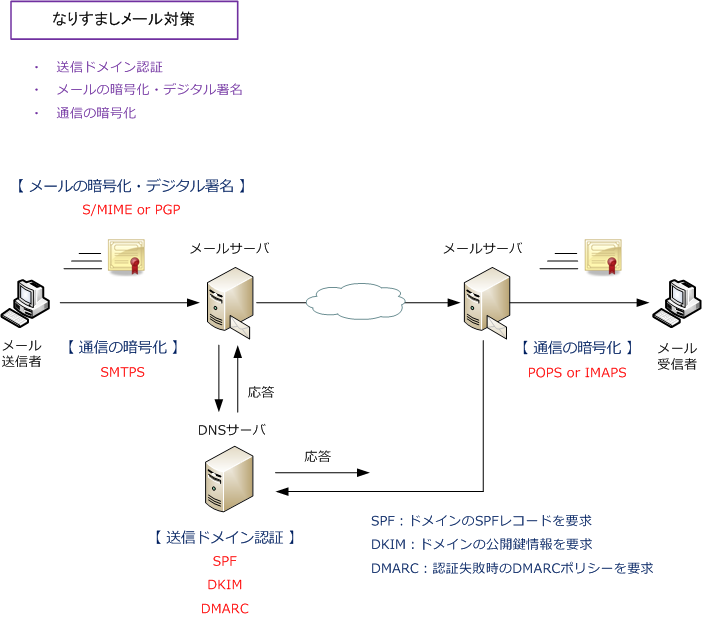
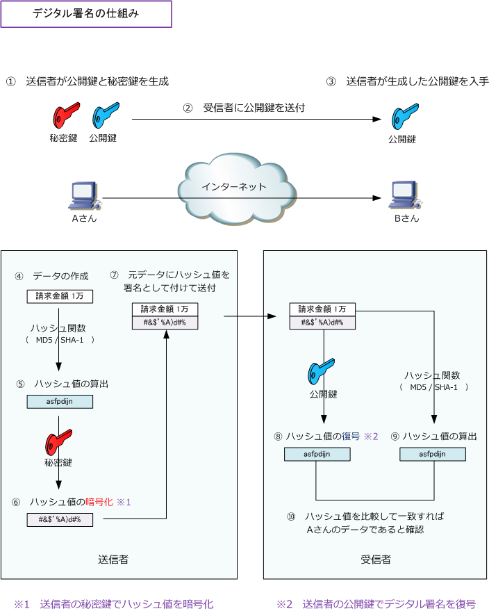

Mail Security
なりすましメール対策
なりすましメール対策としては、メールセキュリティの観点から、大きく３種類の対策方法があります。 直接的で最も効果のあるなりすましメール対策は「SPF、DKIM、DMARC」の送信ドメイン認証ですが、 メールを「S/MIME、PGP」で暗号化・デジタル署名したり、通信を暗号化してくれるTLSを利用した 送受信プロトコルの「SMTPS、IMAPS、POPS」を使用することも、なりすましメール対策になります。

なりすましメール対策：メールの暗号化・デジタル署名
電子メールのセキュリティを向上させる暗号化方式にはS/MIMEとPGPなどがあります。S/MIMEとPGPの 主な違いはメールの暗号化と復号の際に使用される公開鍵の扱いです。信頼できる第三者認証局が保証する S/MIMEの方が信頼性が高いと言えます。ただし、S/MIMEもPGPもあまり普及していません。
S/MIMEはメールの送信者と受信者の間で公開鍵基盤（PKI）を利用し、送信者が付与したデジタル署名を 受信者が検証することにより、メールとして転送されるデータの安全性の確保と送信者の確認ができます。
| メールの暗号化/電子署名 | 説明 |
|---|---|
| S/MIME | S/MIMEは、メールの暗号化で盗聴防止し、メールへのデジタル署名で改ざんを検知できる。 公開鍵の正当性は CA（認証局） が署名することで保証される。 |
| PGP | PGPは、メールの暗号化で盗聴防止し、メールへのデジタル署名で改ざんを検知できる。 公開鍵の正当性はWeb of trust（信用の輪）の考えに基づき信頼できる相手と互いに署名しあう。 |

なりすましメール対策：通信の暗号化
電子メールの送受信プロトコルであるSMTP、IMAP、POPにデータ通信を暗号化するプロトコルのTLSを 組み合わせたプロトコル（SMTPS、IMAPS、POPS）を使用することで、メールメッセージや認証情報を 暗号により保護して安全に送受信できるようになります。ただし、クライアントPC ⇔ メールサーバ間や メールサーバ⇔メールサーバ間では暗号化されますが、メールサーバ上ではメールは暗号化されないので 完全にエンドツーエンドで暗号化したい場合、S/MIMEやPGPを使用する必要があります。
| 通信データの暗号化 | 説明 |
|---|---|
| SMTPS （STMP over SSL/TLS） |
SMTPSは通信を暗号化して送信するプロトコルのTLSを使用し、SMTPをセキュアにするプロトコル。 SMTPSにより送信するメールメッセージ、添付ファイルを暗号化する。 |
| IMAPS (IMAP over SSL/TLS） |
IMAPSは通信を暗号化して受信するプロトコルのTLSを使用し、IMAPをセキュアにするプロトコル。 IMAPSによりメールメッセージ、添付ファイル、認証情報を暗号化。TCPポート番号993を使用する。 |
| POPS (POP over SSL/TLS） |
POPSは通信を暗号化して受信するプロトコルのTLSを使用し、POPをセキュアにするプロトコル。 POPSによりメールメッセージ、添付ファイル、認証情報を暗号化。TCPポート番号995を使用する。 |
なりすましメール対策：送信ドメイン認証
なりすましメール対策で最も効果的な方法は送信ドメイン認証です。送信ドメイン認証とは、送信元の メールサーバのIPアドレスで判別したり、デジタル署名により送信元を認証したりする仕組みのことです。 送信ドメイン認証には SPF、DKIM、DMARC の大きく3つの方法があります。
| 送信ドメイン認証 | 説明 |
|---|---|
| SPF | SPF（Sender Policy Framework）では、メール送信時に使用するメールサーバのIPアドレスを 送信側のDNSサーバにSPFレコードとして登録しておき、メール受信時に受信側のメールサーバは 送信側のDNSサーバのSPFレコードと照合して、送信者がなりすましであるかどうかを判断する。 |
| DKIM | DKIM（DomainKeys Identified Mail）では、メール送信時にデジタル署名し、受信側はメールの 受信時にそれを検証することで、送信者のなりすましや、メール改ざんを検知できるようにする。 受信側が確認するデジタル署名の検証に必要な公開鍵は送信元ドメインのDNSサーバで公開される。 なお、DKIMでは暗号化方式のアルゴリズムにRSA形式のみをサポートしている DKIMでは、送信者のドメインのゾーン情報を管理する権威DNSサーバを利用して、デジタル署名の 真正性の検証に使用する鍵を公開する。DNSをUDP上で動作させる場合、DNSメッセージの最大長が 512バイトという制限があるので512バイトに収まる鍵長として一般に2048ビットの鍵が利用される。 |
| DMARC | DMARC（Domain-based Message Authentication Reporting and Conformance）は、上述の SPFとDKIMを利用したメールの送信ドメイン認証を補強する技術である。SPFやDKIMを使用して、 送信元ドメインを認証する際、認証失敗時にメールをどのように処理するかは受信者の判断となる。 DMARCでは、認証失敗時のメールの処理方針をDMARCポリシーで定めている。 送信者が受信者に対してDMARCポリシーのレコードを、送信側のDNSサーバ上で公開しておいて 認証失敗時、受信側はそのDMARCポリシーに基づいたアクション（受信、隔離、拒否）を実施する。 |